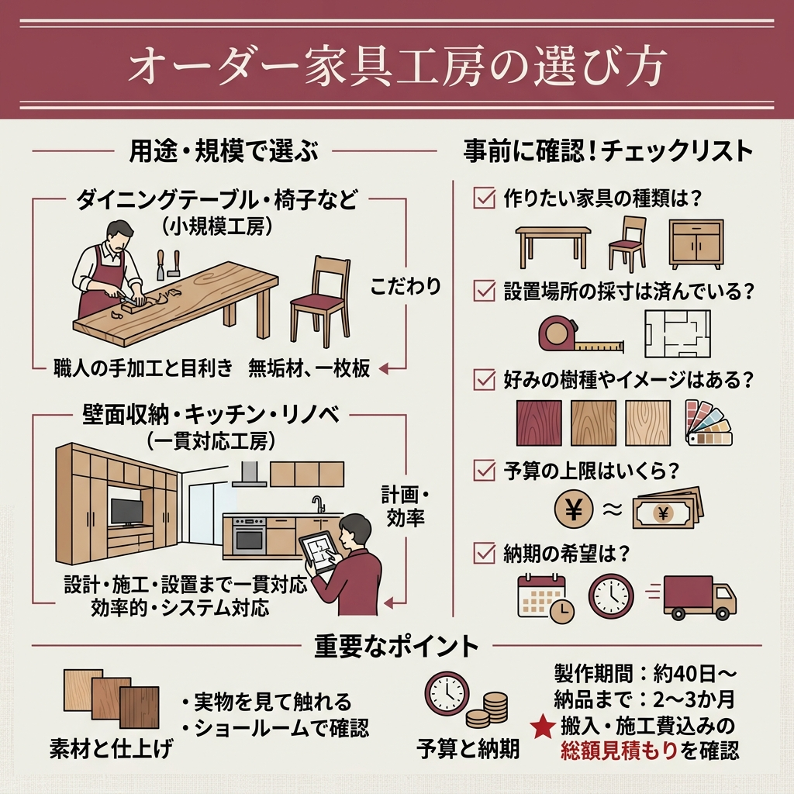
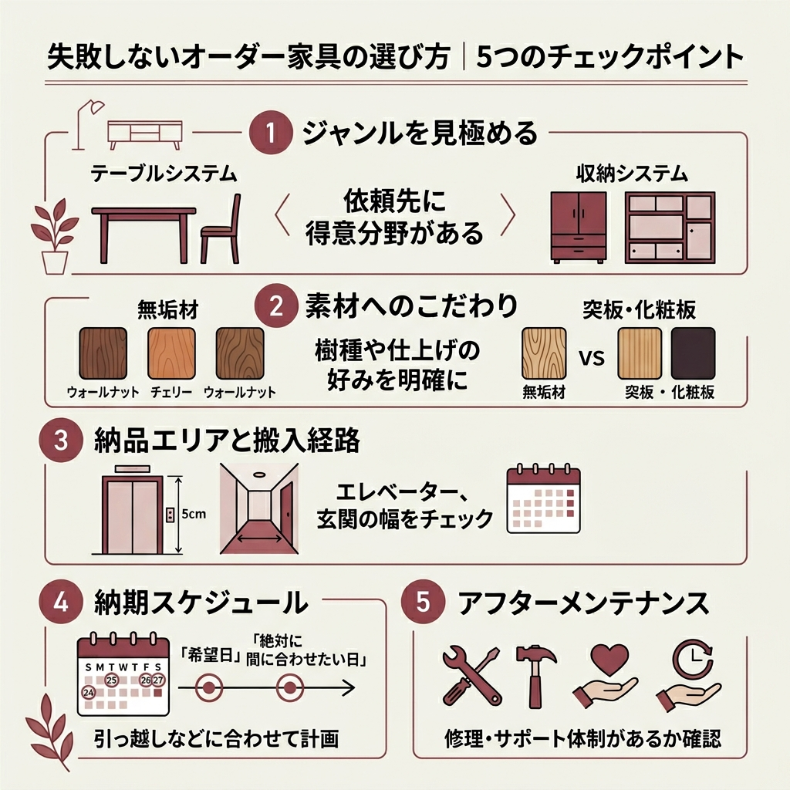
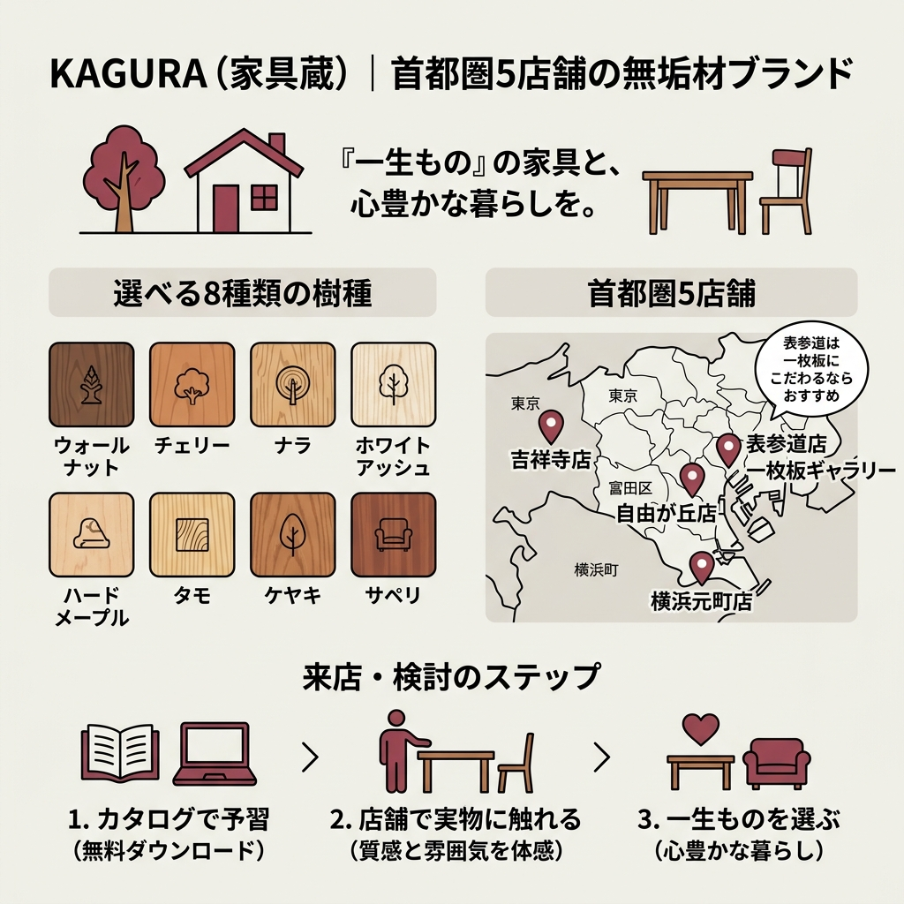
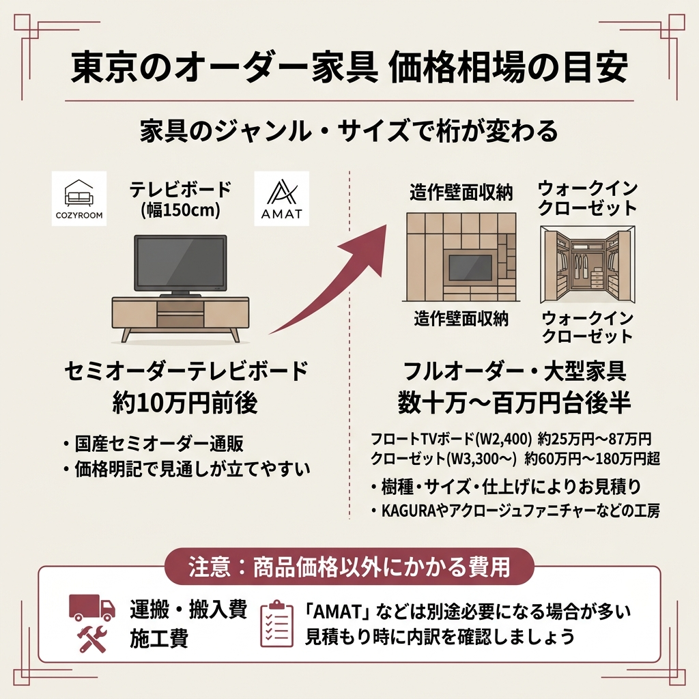
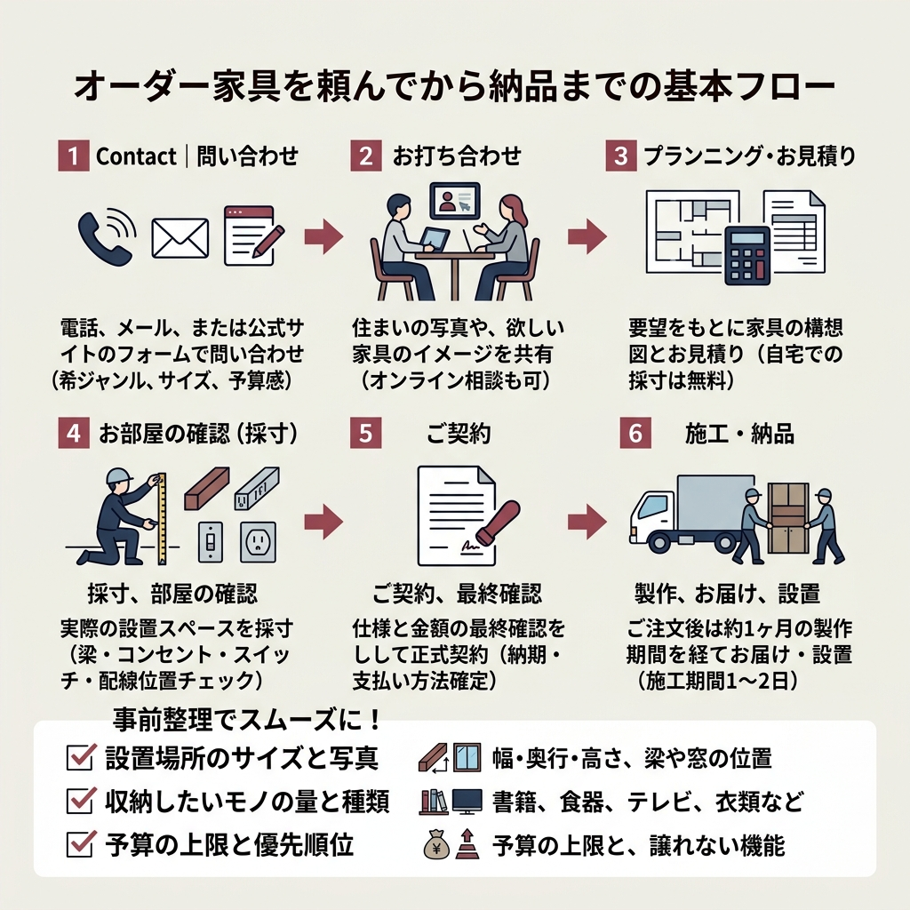
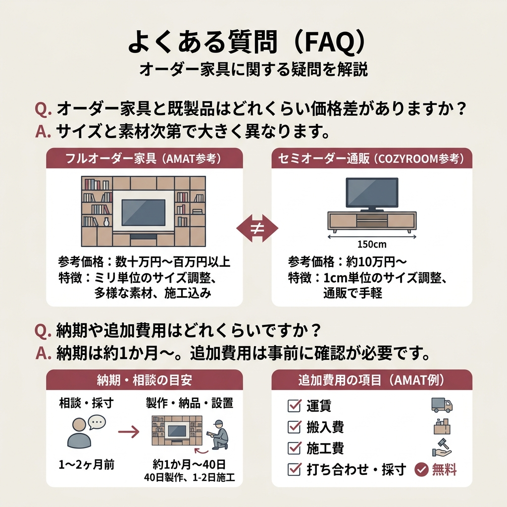

「東京でオーダー家具を頼んでみたいけれど、どこに相談したらいいか分からない」。そんな声をよく耳にします。
同じ「オーダー家具」でも、無垢材を一枚板から削り出す工房もあれば、ミリ単位で空間にハマる収納家具を得意とするメーカーもあります。
この記事では、東京エリアで実際にショールームを構える8社の特徴・価格目安・店舗情報を、公式サイトで公開されている情報をもとに整理しました。
- 東京で頼めるオーダー家具メーカー8社の特徴と得意ジャンル
- 無垢材ブランド・収納特化・通販の3タイプの違い
- 参考価格帯と納品までの基本フロー
- ショールーム来店前に整理しておくべきこと
結論｜東京のオーダー家具おすすめ8社を一覧で比較
まずは結論から。今回紹介する8社を「得意ジャンル」「拠点」「価格目安」で整理しました。
| ブランド | 得意ジャンル | 東京の拠点 |
|---|---|---|
| アクロージュファニチャー | 無垢材・一品オーダー | 新宿区神楽坂 |
| KAGURA（家具蔵） | 無垢材ブランド | 表参道・吉祥寺・自由が丘ほか |
| AMAT | 収納・造作家具 | 渋谷区神宮前 |
| 間中木工所 | 特注家具・造作 | 墨田区立花 |
| TIDAFIKA | 無垢材テーブル | 日野市 |
| WOODWORK | 無垢天板・オーダー収納 | 東京 |
| Sense Of Fun | デザインメーカー | 東京 |
| COZYROOM | セミオーダー通販 | 通販（兵庫県の自社工場） |
「無垢材で長く使う一枚板テーブルが欲しい」のか、「壁面にぴったりハマる収納が欲しい」のか。まずはここを決めてしまうと、候補がぐっと絞れます。
無垢材も気になるし、収納も増やしたい…全部やってくれる会社ってあるんですか？
「テーブルなどの家具系」と「壁面収納などの造作系」では、得意な会社がはっきり分かれます。両方を1社で済ませようとせず、用途で選び分けるのが失敗しないコツです。

オーダー家具とは？東京で頼む3つの魅力
 出典: sense-of-fun.com
出典: sense-of-fun.com 出典: www.kagura.co.jp
出典: www.kagura.co.jp 出典: www.acroge-furniture.com
出典: www.acroge-furniture.comオーダー家具とは、サイズ・素材・デザインを自分の暮らしに合わせて1から組み立てる家具のことです。
既製品のように「ちょっと幅が足りない」「奥行きが余って通路が狭い」といったストレスがなく、空間に対してジャストフィットさせられるのが最大の魅力です。
魅力1: 空間にジャストフィットする
マンションや戸建ての壁面は、見た目以上に凹凸や梁があります。
既製品の収納だと数センチの隙間が生まれがちで、そこに埃が溜まったり、家全体のリズムが崩れたりします。
1cm単位で寸法を調整できるのがオーダー家具の強み。AMATのように耐震設計まで踏まえてミリ単位で組むメーカーもあれば、COZYROOMのように通販で1cm単位のセミオーダーに応じるブランドもあります。
魅力2: 素材を自分で選べる
無垢材オーダーの世界では、ウォールナット・チェリー・ナラ・タモなど、樹種ごとに表情がまったく違います。
KAGURAの公式サイトでは、ウォールナット・チェリー・ナラ・ホワイトアッシュ・ハードメープル・タモ・ケヤキ・サペリといった樹種ごとの特徴が紹介されており、家具を「素材から選ぶ」という体験ができます。
魅力3: 一生もの、として持てる
大量生産品はモデルチェンジで部品供給が止まりますが、オーダー家具はメーカーが補修やメンテナンスを引き受けてくれるケースが多いです。
たとえばAMATは納品から1年間の品質保証に加え、保証期間後もメンテナンスサービスを公式に案内しています。長く付き合える前提で設計されているのは、オーダー家具ならではの安心感です。

失敗しないオーダー家具の選び方｜5つのチェックポイント
最初に結論。オーダー家具で失敗するパターンの大半は「依頼先のミスマッチ」です。価格や納期で揉めるより、得意分野が合っていなかったというケースが多いという印象でした。
- 依頼したい家具のジャンル（テーブル系か収納系か）
- 素材へのこだわり（無垢材か、突板や化粧板でもOKか）
- 納品エリアと搬入経路
- 納期の許容範囲（数週間〜数ヶ月）
- アフターメンテナンスの有無
ジャンルを見極めると候補が一気に絞れる
たとえばダイニングテーブルやチェアを無垢材で頼みたいなら、KAGURAやアクロージュファニチャー、TIDAFIKAのような無垢材工房・ブランドが第一候補です。
一方で、壁面収納や食器棚、テレビボードといった「家にビルトインする家具」を頼みたいなら、AMATや間中木工所のような造作・特注家具メーカーが向いています。
素材へのこだわりを言語化する
「無垢材で」と一言で言っても、ウォールナットの重厚感とチェリーの艶やかさではまったく印象が違います。ショールームに行く前に、好きな樹種の写真を1〜2枚スマホに保存しておくだけで、打ち合わせがぐっとスムーズになります。
納品エリアと搬入経路を最初に伝える
納期は「希望日」と「絶対に間に合わせたい日」を分けて伝える
たとえばAMATの公式サイトでは、ご注文後「約1か月間ののちお届け・設置となります」と案内されています。引っ越しや新居入居に合わせるなら、この期間を逆算してスケジュールを組みましょう。
アフターメンテナンスがあるかを必ず確認
長く使う前提だからこそ、メンテナンス体制は要チェックです。AMATやKAGURAのように公式にアフターサービスを掲げているところは、購入後の心理的ハードルがぐっと下がります。
アクロージュファニチャー｜一級家具製作技能士の手による無垢のオーダー
結論から言うと、アクロージュファニチャーは「職人の手仕事に惚れ込んで頼む」タイプの工房です。
公式サイトでは、一級家具製作技能士の国家資格を持つ職人が注文を受けて製作していると明記されており、ブランド名のACROGEは「ACROSS GENERATION（世代を超えて）」が由来。末永く受け継ぐ家具づくりを掲げています。
一品一品にストーリーがある事例
公式に紹介されている納品事例を眺めていると、たとえばこんなラインナップが並びます。
- 山本邸：おがめ仕上げのブラックウォールナットによるリビングダイニングセット
- 須貝邸：身体のサイズに合わせた桜のロッキングチェア
- 森邸：楢のキッチンとダイニングテーブル（建築設計士の自邸リフォーム）
- 音楽之友社：ブラックウォールナット無垢材の卓上小型スピーカー
- 星野リゾート：温泉お絵描きセット（桜無垢材）
個人の住まいから法人案件まで、施主に合わせて1から設計しているのが伝わってきます。
ショールームと木工教室がある
アクロージュファニチャーは、家具の販売だけでなく東京・神楽坂にショールームや木工教室も併設しています。「現役の家具職人に学び、自分の家具を自分で作る」という体験を提供しているのが他にはない特徴です。
- 住所：〒162-0818 東京都新宿区築地町6番地 北星ビル2階
- 電話：03-6265-0241
- 営業時間：9:00〜18:00（年末年始除く／不定休）
- アクセス：東西線 神楽坂駅から徒歩4分／有楽町線 江戸川橋駅から徒歩5分／JR 飯田橋駅から徒歩13分
- 工房主：岸 邦明（一級家具製作技能士）
来店は事前予約制が案内されているため、メールや電話で日程調整をしたうえで足を運ぶのが安心です。木に触れて納得してから注文したい人には嬉しい環境です。詳細はアクロージュファニチャー公式サイトで確認してください。

KAGURA（家具蔵）｜表参道・吉祥寺など首都圏5店舗の無垢材ブランド
「東京で無垢材オーダー家具のブランドといえば」と聞かれたら、まず名前が挙がるのがKAGURA（家具蔵）です。
公式サイトでは「『一生もの』の家具と、心豊かな暮らしを。」をコンセプトに掲げ、世界中から厳選した銘木を使った無垢材家具を首都圏5店舗で展開しています。
店舗一覧（公式情報）
- 表参道店：東京都港区南青山5-9-4／03-3797-1700／10:30-19:00（水曜日定休）
- 一枚板ギャラリー：東京都港区南青山5-9-5／03-3797-1700／10:30-19:00（水曜日定休／表参道店の隣に併設）
- 吉祥寺店：東京都武蔵野市吉祥寺本町2-13-5／0422-28-7227／10:30-19:00（水曜日定休）
- 自由が丘店：東京都目黒区自由が丘3-7-5／03-3723-6111／10:30-19:00（水曜日定休）
- 横浜元町店：神奈川県横浜市中区元町1-22-1／045-222-2777／10:30-19:00（水曜日定休）
選べる樹種の豊富さが魅力
KAGURAで扱われている無垢材の樹種は、ウォールナット・チェリー・ナラ・ホワイトアッシュ・ハードメープル・タモ・ケヤキ・サペリの8種類。
同じデザインのテーブルでも樹種によって質感や雰囲気が大きく変わるので、ショールームで実物に触れて選べるのは大きなメリットです。
カタログで樹種感を予習できる
来店前に雰囲気を掴みたいなら、KAGURAは約150ページのカタログを公式サイトから無料でダウンロードできます。電話で問い合わせる前に、まず資料を眺めて好きな樹種の当たりをつけると効率的です。
店舗詳細・カタログ請求はKAGURA公式サイトから。
表参道と吉祥寺、どっちのKAGURAに行けばいいか迷います…
表参道店は隣に一枚板ギャラリーが併設されているので、テーブル天板にこだわるなら表参道がおすすめです。住まいの近さで決めても問題ないですよ。
AMAT｜延べ11,231件以上の実績を持つ収納家具特化メーカー
結論から言うと、AMATは「壁面収納・テレビボード・クローゼットといった造作家具を、ミリ単位で組みたい人」のためのメーカーです。
事業開始2004年以降、首都圏のみで延べ11,231件以上の施工実績を公式に掲げており、収納家具に特化した経験値が圧倒的です。
東京ショールーム情報
- 住所：〒150-0001 東京都渋谷区神宮前2-7-15 アンシャンテ1F
- 電話：03-5413-3003
- 営業時間：10:00〜19:00
- 定休日：水曜日、祝日
- 最寄り駅：東京メトロ銀座線 外苑前駅3番出口より徒歩8分
参考価格はかなり詳しく公開されている
AMATの良いところは、公式サイトで「人気のオーダーメイド家具」の参考価格がきちんと公開されていることです。ふんわりとした「数十万円〜」ではなく、サイズと一緒に明確な数字が出ています。
| 家具タイプ | サイズ | 参考価格（税込） |
|---|---|---|
| フロートTVボード | W2,400×D400×H256 | ¥247,500〜¥872,300 |
| 収納重視なフルサイズTVボード・壁面収納 | W3,500×D400×H1,800 | ¥935,000〜¥1,287,000 |
| 壁一面を飾るTVボード | W4,450×D400×H2,150 | ¥902,000〜¥1,870,000 |
| 大人のためのクローゼット | W3,490×D1,375×H2,300 | ¥605,000〜¥1,606,000 |
| オールインワンクローゼット | W3,328×D595×H2,450 | ¥759,000〜¥1,848,000 |
製作期間は40日、施工期間は1〜2日というのも公式に明記されています。引っ越しや家全体のリノベに合わせるなら、この納期を念頭にスケジュールを組んでおくと安心です。
AMATが大事にしている3つの柱
- POINT01：お客様の暮らしを「最優先」に考えた設計（細やかなサイズ対応）
- POINT02：プランナー・設計士・家具職人・家具大工の一気通貫でつくる耐震設計
- POINT03：延べ11,231件以上の実績に裏打ちされた経験値
建築士が複数在籍しており、企画から施工までワンストップで耐震性に配慮した設計をしてくれるのが他にはない強みです。
1年間の品質保証＋メンテナンスサービス
AMATは納品から1年間、施工部位や造作物の故障・不具合を無償で補修・交換するという品質保証を公式にうたっています。
さらに保証期間が終わったあとも、メンテナンスサービスとして補修や軽微な工事を無償で承る制度があり、長く付き合える前提で設計されています。
もっと詳しい事例や見積もりはAMAT公式サイトから。ショールーム情報はこちらのショールームページにまとまっています。
間中木工所｜大正13年創業、墨田区の特注家具メーカー
間中木工所は、大正13年（1924年）創業という長い歴史を持つ東京の特注家具メーカーです。2024年6月には創業100周年を迎えており、公式サイトでも「間中木工所 創業100周年」のニュースが掲載されています。
「特注家具を通して、お客様ひとりひとりの夢を形にしてまいりました」と公式が掲げているとおり、ゼロからの設計と手作りでつくる一点ものに強みがあります。
会社情報
- 創業：大正十三年
- 工場：東京都墨田区立花5-9-5（TEL: 03-3613-9171）
- 本社：東京都墨田区錦糸1-15-2 MFABRIQUE 601（TEL: 03-3625-9171）
- 業務内容：特注家具・オーダー家具の設計／製造／施工
公式に紹介されている施工事例
公式サイトのWORKSページには、実際の施工事例がいくつも掲載されています。住宅用の造作家具からオフィス案件まで幅広く手掛けているのが特徴です。
- 三鷹市 井の頭住宅 戸建て住宅 造作（#55668）
- 中央区 ロフトベッド 戸建て住宅（#55706）
- 江東区 オフィス 造作家具工事（#55610）
- 品川区 オフィスエントランス工事（#55376）
- 藤沢市N邸 住居兼オフィス造作家具（#38607 小上り）
- 新宿区 オフィス 小上りの設置（#55045）
- 港区ホテル 宴会テーブル（#54742）
- 中央区Hビル 電動ブラインド付きガラスショーケース
近年の公式お知らせには、ロッテシティホテル錦糸町の開業15周年記念のニュースや、墨田区産業功労賞の受賞、ものづくり支援共創施設「すみだテクネットラボ STL」オープンの告知などが掲載されており、地域に根を張って活動している様子が伝わってきます。
「ただ家具を作る」というより、住宅・オフィス・ホテルといった空間ごと提案できる工務店的な強みがあるメーカーです。詳細は間中木工所公式サイトで確認してください。
TIDAFIKA（ティダフィカ）｜日野市の無垢材オーダー家具工房
 出典: tidafika.com
出典: tidafika.com結論から言うと、TIDAFIKAは「無垢材のテーブルにとことんこだわりたい人」のための工房です。
20年以上の木工経験を持つ職人が2020年1月に独立開業した工房で、テーブル制作1000台以上の実績があると公式に紹介されています。
工房情報
- 住所：東京都日野市大字上田472-1
- 電話：050-3390-8571
テーブル特化の安心感
「20年以上の木工歴、テーブル制作1000台以上」という数字は、テーブル1点に絞って考えたときに大きな安心材料になります。
同じ無垢材オーダーでも、何でも屋さんに頼むより、得意ジャンルを絞った工房に頼んだほうが満足度は高くなりやすいです。
催事に出ているのでチェックしやすい
公式お知らせを見ると、伊勢丹浦和や横浜高島屋への出展情報が定期的に掲載されています。実物に触れたいけれど工房までは遠い、という人は、まず催事で雰囲気を確かめてみるのも一つの手です。
WOODWORK｜オーダー家具と無垢天板の専門ブランド
WOODWORKは、東京を拠点にオーダー家具と無垢天板の両方を扱う専門ブランドです。
公式サイトのナビゲーションを見ると、コンセプトプロダクト「F.」シリーズ、テーブル／デスク、一枚板／無垢天板、椅子／ソファ、収納、その他家具／インテリア、木の小物、アップサイクル家具、オーダー家具〈TANA〉といった豊富なカテゴリが並びます。
納品事例カテゴリも幅広い
納品事例ページには、テーブル／デスク・椅子／ソファ・本棚／シェルフ／飾り棚・TV／AV／サイドボード・キャビネット／チェスト・食器棚／カウンター下収納といったカテゴリが掲載されており、住居だけでなくオフィス・店舗の施工事例も紹介されています。
「家具単品」と「無垢天板」という2軸でブランドを構えているため、自分の頭の中に「天板はこの木で、サイズはこれくらい」というイメージがある人ほど相談しやすい印象です。
WOODWORKに向いている人
- 無垢の一枚板天板を使ったテーブルやデスクが欲しい
- 家具と一緒にオフィスや店舗の内装も相談したい
- オーダー家具〈TANA〉のような収納シリーズも気になる
詳しい商品ラインナップや事例はWOODWORK公式サイトで確認してみてください。
Sense Of Fun｜東京発の家具メーカー兼デザイン事務所
Sense Of Funは、家具屋と設計事務所が一体となったデザインメーカーです。
「Designed and made in Tokyo, Japan.」を掲げており、自社プロダクトとして「タナプラス」「Bed TO Sofa」「M Wagon」「Wols Wagon」「西園寺テーブル」といったオリジナル家具をラインナップしています。
プロダクトと造作を両方扱う
公式サイトのメニューには、PRODUCT（既存ラインナップ）の購入だけでなく、ORDER（オーダー）、INTERIOR、WORKS、ABOUTといったページが並びます。
つまり「決まった商品から選ぶ」のと、「ゼロからオーダーで頼む」のと、両方の入り口が用意されているということです。
3つの拠点機能を持つ
家具販売だけでなく、Sense Of Studio（ショールーム／イベントスペース／撮影スタジオ）、Sense Of Fab（デジタル木材加工機ShopBotを使った加工受託）といった機能も併設されているのがユニークなところです。
クリエイティブな人や、デザイン性を重視するクライアントに向いているメーカーです。詳細はSense Of Fun公式サイトから。
COZYROOM｜1cm単位で頼める国産セミオーダー家具通販
「東京のショールームに出向くのはちょっと面倒…」という人に向いているのが、通販でセミオーダーが完結するCOZYROOMです。
幅・高さ・奥行きを1cm単位で空間に合わせて調整でき、注文を受けてから兵庫県の自社家具工場で職人が一品一品丁寧に製作する受注生産の国産家具です。
14色から選べるカラーバリエーション
COZYROOMのセミオーダー家具は、全14色のカラーバリエーションが特徴です。
スタンダードなホワイトとブラック、石目調のニュアンスカラー3色、インテリアに合わせやすい木目柄8色がラインナップされていて、「色違いで他の家具と合わせる」という使い方ができます。
家具タイプとシリーズが豊富
リビングの壁面収納、書斎の本棚とデスク、キッチンのレンジ台、サニタリーやキッチン両用のスリムラック、ワードローブ、下駄箱まで幅広く揃っています。
- セミオーダーレンジ台CUBO（幅50〜70cm・奥行52cm・全14色）
- セミオーダーレンジ台LASCO 専用上置きラック ¥44,800〜
- セミオーダーレンジ台LASCO ゴミ箱収納 ¥49,800〜
- SVALA（スヴァラ）テレビボード 幅150cm ¥98,000
- SVALA（スヴァラ）テレビボード 幅180cm ¥110,800
- セミオーダーワードローブ 引出4段 LASCO ¥49,586
- 特注セミオーダー壁面収納GRANNER2 ¥82,500〜
本格的な造作家具と比べると価格はぐっと抑えめで、「壁にハマればOK」というニーズには十分こたえてくれます。
セミオーダーって、フルオーダーと何が違うんですか？
サイズや色の選択肢があらかじめ用意されていて、その中から自分の空間に合わせて組み合わせるのがセミオーダー。1からデザインするフルオーダーより安価で納期も短い傾向です。
商品ラインナップは家具通販のCOZYROOM公式サイトで確認できます。

価格相場｜東京のオーダー家具にかかる費用の目安
結論。東京のオーダー家具の価格は、家具のジャンルとサイズで桁が変わります。
「うん十万」で済むこともあれば、ウォークインクローゼットのような大型造作になると百万円台後半に届くケースもあります。判断材料として、公式に公開されている数字をいくつか並べておきます。
| 家具タイプ | 価格目安（公式情報） |
|---|---|
| AMAT フロートTVボード（W2,400） | ¥247,500〜¥872,300 |
| AMAT 大人のためのクローゼット（W3,490） | ¥605,000〜¥1,606,000 |
| AMAT オールインワンクローゼット（W3,328） | ¥759,000〜¥1,848,000 |
| COZYROOM SVALAテレビボード 幅150cm | ¥98,000 |
| COZYROOM 特注セミオーダー壁面収納GRANNER2 | ¥82,500〜 |
同じ「テレビボード」でも、AMATのフルオーダー（数十万円〜）とCOZYROOMのセミオーダー（10万円前後）では価格帯がはっきり違います。予算に合わせて選びましょう。
「無垢材か」「セミオーダーか」で予算感は大きく変わる
本格的な無垢材オーダーは樹種・サイズ・仕上げで価格が動くため、KAGURAやアクロージュファニチャーのような工房は基本的に「お見積り」になります。
逆にCOZYROOMのような国産セミオーダー通販は、商品ごとに税込価格が明記されているので、家計の見通しが立てやすいのが強みです。

オーダー家具を頼んでから納品までの基本フロー
「オーダー家具って、注文したらどれくらいで届くの？」という疑問に答えるため、AMATの公式サイトで案内されているフローをベースに整理しました。
Contact｜まずは問い合わせ
電話やメール、または公式サイトのフォームで問い合わせ。希望のジャンル・サイズ・予算感をざっくり伝えます。
お打ち合わせ
ショールーム来店、またはオンライン相談でヒアリング。住まいの写真や、欲しい家具のイメージを共有します。
プランニング・お見積り
要望をもとに家具の構想図とお見積りをもらいます。AMATのFAQでは、自宅でのお打ち合わせや採寸は無料との案内があります。
お部屋の確認（採寸）
実際の設置スペースを採寸。梁・コンセント・スイッチ・配線の位置までチェックしてもらいます。
ご契約
仕様と金額の最終確認をしたうえで正式契約。納期・支払い方法もこの段階で確定します。
施工・納品
AMATの場合、ご注文後は約1か月間の製作期間を経てお届け・設置。製作期間40日／施工期間1〜2日が一つの目安です。
家具1つに対して6ステップ。「思ったより時間がかかる」と感じるかもしれませんが、ジャストフィットの家具を一生もので持つ前提なら、決して長くはありません。
来店・問い合わせ前に整理しておきたい3つのこと
結論。オーダー家具の打ち合わせをスムーズに進める最大のコツは、「事前に3つの情報を整理してから連絡する」ことです。
- 設置場所のサイズと写真（幅・奥行・高さに加えて、梁や窓の位置）
- 収納したいモノの量と種類（書籍・食器・テレビ・衣類など）
- 予算の上限と、できれば優先順位（どの機能を絶対に外せないか）
この3点が揃っていれば、初回の打ち合わせで具体的な提案までたどり着きやすくなります。逆に「とりあえず話を聞きに行く」だと、現地調査からのスタートで時間が読みづらくなりがちです。

よくある質問（FAQ）
まとめ｜東京のオーダー家具は「ジャンルで選ぶ」が正解
- 東京のオーダー家具は「無垢材ブランド」「収納・造作」「セミオーダー通販」の3タイプに分かれる
- 無垢材なら KAGURA・アクロージュファニチャー・TIDAFIKA・WOODWORK が候補
- 収納・造作なら AMAT・間中木工所、デザイン重視なら Sense Of Fun
- 通販で気軽に頼みたいなら COZYROOM の1cm単位セミオーダー
- AMATは参考価格・納期・FAQが公式に公開されており、初心者でもイメージしやすい
- 来店前に「サイズ」「収納したいもの」「予算と優先順位」の3点を整理するとスムーズ
納品して終わり、ではなくその後のお客さまの暮らしにも寄り添いたい。
AMAT 公式サイト「アフターサービス」より
調べていて一番強く感じたのは、東京のオーダー家具メーカーはどこも「長く使ってもらう前提」で商品とサービスを設計しているということでした。
気になったメーカーが見つかったら、まずは公式サイトで施工事例を眺めるところから。それだけでも、自分の暮らしにハマる1社が見えてきます。